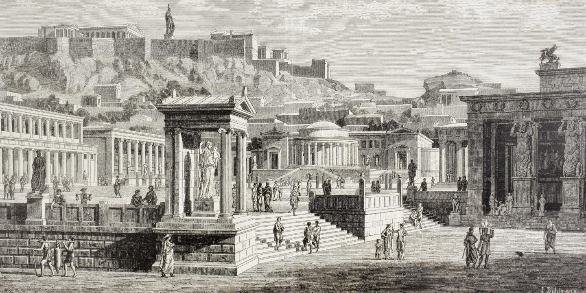
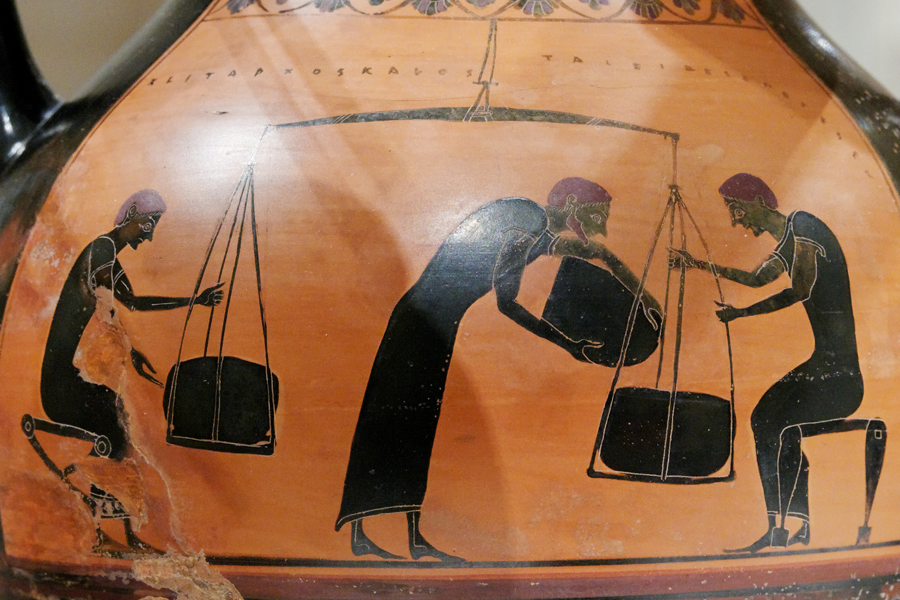

Perkembangan ilmu pengetahuan di Yunani Kuno dimulai pada abad ke-6 SM. Ini adalah periode penting di mana pemikiran filsafat berkembang dari mitos ke logika, menggantikan penjelasan irasional dengan pemikiran rasional. Ini mencerminkan peralihan dari mitos ke logos dalam sejarah peradaban manusia.
Lahirnya pemikiran intelektual dari bangsa Yunani disebabkan oleh faktor-faktor berikut:

First slide label
Some representative placeholder content for the first slide.

Second slide label
Some representative placeholder content for the second slide.

Third slide label
Some representative placeholder content for the third slide.